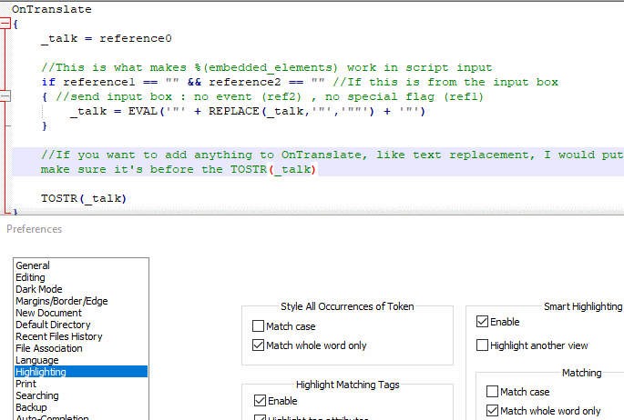

Intro
Hello! I've been using Notepad++ to develop ghosts/etc. nearly every day for over 3 years now, and I've learned some things! There are a lot of tweaks you can make to improve quality of life, as well as many key combos and other features that you may find helpful. In this guide I'll show you all of the tricks I've learned, and the ways I use them to improve my ukagaka development workflow.
Before we get into it, a couple of notes. First of all, I primarily work in YAYA, and this guide will be written with YAYA in mind and using YAYA code as examples. Still, even if you're not working in YAYA, there are a lot of helpful things you can learn here. There are some tips for surfaces.txt code as well.
Second, there are other text editors suitable for making ghosts in! In particular, VScode is one that a lot of devs use. It has plugins made for it that add YAYA specific syntax highlighting, and more. Personally, though, I'm not fond of IDEs. I am extremely picky about my typing, and I want a program that will let me do what I want without trying to hold my hand. That is why I use Notepad++, because it is powerful, but it is also simple.
Related to that, I will note that I have all forms of auto complete and text correction turned off. So you won't see autocomplete pop up in my demonstrations here. I can't stand text correction or auto complete, so I don't use it. (If you also want to turn this off, it's under Settings>Preferences, on the Auto-Completion tab.)
And finally, this guide assumes basic knowledge of Notepad++. I won't be showing you how to save and load files, I'll be showing you some of the more advanced or niche features of the program.
So, let's get into it! This guide is really more like a collection of smaller guides, so if there's something in particular you're interested in feel free to skip around to different sections!
- Intro
- Syntax highlighting
- Key combos
- Column editing
- Find and replace
- Macros
- Sessions and other setup
- Miscellaneous
- Conclusion
- Update notes
Syntax highlighting
One of the major reasons to use an editor such as Notepad++ is for syntax highlighting. Syntax highlighting is a setting that highlights keywords in your code, such as "if", "else", etc. Typically, when you're writing in YAYA, it is recommended to use the C language highlighting, since YAYA is a language modeled after the basic structure of C.
However, there are also some "user defined languages" out there, called UDLs, which add YAYA specific highlighting. I don't personally use these, for two major reasons. First, when you are using a UDL, Notepad++ can't automatically space your curly braces properly like it does when you use an inbuilt language. Additionally, UDLs are keyed to specific themes, which means they can't be easily used with other themes/color modes.
The above gif demonstrates the difference between regular text, C language highlighting, and finally, a YAYA UDL which is optimized for a dark skin. You can see that with the C language selected, when I press enter between the curly braces, it spaces them out twice as far and also adds a tab, so that I can start writing in the proper place immediately. With the normal text and the UDL, if I press enter, I get a single linebreak and that's all. I'd have to add the extra linebreak and tab myself, which is a lot of extra fuss. It really adds up over time.
You can also see what happens when you use a YAYA UDL that is not set up for the color mode you're using - you'd have to change all the colors yourself to make it look right on light mode like this.
If these drawbacks don't bother you, then go right ahead and use one of the multiple AYA/YAYA UDLs. If you're like me, though, and you find UDLs to be lacking, then there is an option to tweak the C highlighting to be better for AYA/YAYA. And that is primarily through adding additional keywords.
What we're going to do is go into Settings>Style Configurator. In the window that appears, you'll see two lists, Language and Style. You'll want to select C in the language list, since that is what we'll be editing.
In the Style list, click on "INSTRUCTION WORD". Here you'll see different options to style the color and font for instruction words, but more importantly, you'll see two text windows at the bottom which say "Default keywords" and "User-defined keywords". The default keywords box shows all the keywords that Notepad++ automatically recognizes for this language. But as you may have guessed, you can add to this list with user-defined keywords! Simply add the keywords you want, separated by spaces.
Add the following to the user-defined keywords:
elseif when others foreach
This will cover all of the additional keywords YAYA has that the normal C highlighting doesn't cover. Once you've done this, you should see words like "elseif", which weren't recognized before, be highlighted the same as "if" and "else".
If you watch closely, you can see the keywords instantly highlight in the file once I paste the list in!
Next, we move on to "TYPE WORD". I have chosen to use this for YAYA's many modifiers, as it's handy to have them highlight so I know I've written them correctly, and the C highlighting already highlights a few of them such as "void". Also, the purple color used for this in light mode is just pleasing to me.
In the TYPE WORD option, add the following to the user-defined keywords:
parallel random nonoverlap sequential array pool melt all last nonoverlap_pool sequential_pool array_pool pool_nonoverlap pool_sequential pool_array melt_nonoverlap melt_array melt_sequential
Now you should see modifiers like parallel, nonoverlap, and pool be highlighted!
And now that you've made these little tweaks, you have all the benefits of having YAYA's keywords highlighted, but you don't have the drawbacks of a UDL! You can use any theme or color mode, though it seems that if you switch between dark and light mode you'll have to add the keywords to both. But once it's set up, you don't have to worry about it again, unless YAYA adds new keywords.
Key combos
Key combos are incredibly useful. When you use a mouse, that takes your fingers away from the keyboard for a moment, and it can really slow you down. So if you want to improve your efficiency, learning a few key combos will really go a long way. Personally, I find them fun!
Most people already know basic key combos such as Ctrl + Z to undo, Ctrl + C to copy, Ctrl + V to paste, and Ctrl + S to save. But let me take you a step further into some of the less-known ones, and some that are specific to Notepad++.
Mass commenting
Let's say you want to comment out a large chunk of code. You can't simply use the /* */ style of block commenting because there are already block comments in the code, and block comments can't be nested. What to do? Writing all those // at the start of each line would be miserable!
Luckily for you, there's a really easy solution! Simply highlight the code in question, and press Ctrl + K (K for Komment? ... It's kind of a stretch, but that's how I remember it). Tada! Every line got a // added at the beginning to make it a single line comment. This is also really useful in surfaces.txt, where block comments aren't valid at all, and is the primary reason I also turn on C highlighting in shell files.
What if you want to uncomment? That's also simple, Ctrl + Shift + K will uncomment everything that you have selected.
Note that these actually add/reduce comments by one level! So you can press Ctrl + K multiple times if you wanted to add multiple levels of commenting, for some reason. The benefit to this, really, is that if there are already comments in the code you want to mass-comment, then if you uncomment it later, those comments will go back to their normal level of commenting rather than completely losing their comment status.
Duplicate line
This one is really simple. Press Ctrl + D (D for Duplicate), and the current line will be duplicated. If you have some text highlighted, then that text will be duplicated.
So why is this useful? At first I thought it was kind of a weird one and that I would never use it. But actually, I use it a lot. Consider the following:
I really enjoy being able to write the basic structure of a script, then press Ctrl + D rapidly to make a bunch of that structure so I can fill it in with content. It's quicker than having to select, copy, and then paste repeatedly. It's wonderful for making animations in SERIKO, as well.
Not just that either, consider this use case:
Here I've selected a particular set of braces that I want to copy the contents of, linebreaks included, and now I can just press Ctrl + D to quickly make a bunch of them. This tends to come up in niche places, but once you spot where it can be useful, it can make things very quick.
Shift a line up/down
Sometimes, you want to rearrange your scripts. You just do. Or maybe that's just me. Sometimes I want them to be sorted by length or something, you know?
Anyways, it's kind of a hassle to have to highlight scripts with the mouse, cut them, delete the extra linebreak left behind, make a new line break where you want the script to be placed, and then paste it in. Right? Right!? I think so, anyways. And thankfully, if you're just doing a little shifting around of stuff, there is a key combo that helps with that.
Press and hold Ctrl + Shift, then press either the up arrow key or the down arrow key, and watch your current line shift around like magic, effortlessly sliding past other lines, leaving no gaps behind it. Note that there has to be another line which it can actually swap with for this to work. You can't do it if it's the only line in the file, or shift into the last line at the end of a file if that line is blank.
You can also do this with selections! If you want to scoot several lines around at once, just select the text you want to scoot, and use the same key combo as before.
Scroll up/down by one line
I'll be honest, I don't truly use this one much. But sometimes, you can't get your window to scroll just right, and it's kind of annoying! But rejoice, for there is a way to scroll by exactly one line! Simply press and hold Ctrl, then press either the up arrow key or the down arrow key, and watch your view scoot along at a glorious one line per key press.
Generic keypresses
The following are not Notepad++ specific keys/combos, but I use them a lot and I think you should give them a try. If you practice with them, they become very natural and can improve your speed a lot!
You can quickly highlight whole words with Ctrl + Shift and the left/right arrow keys. Do this repeatedly, and you can quickly grab whole sentences, as well. This is really great for quickly highlighting something, then copying it or cutting it, or something of that nature. This is really one of my favorite keyboard tricks.
Home and End are keys that I neglected for many years, but eventually I warmed up to them. Home sends you to the beginning of a line, and End sends you to the end of a line. They're sort of in an awkward spot, but if you practice they're not so bad to hit. And I find them useful all the time. Note that if you have word wrap turned on, the place where a line wraps is considered the end of the line for the purposes of Home and End.
You may also find it useful to know that if you hold down Shift before pressing Home or End, you can quickly use them to highlight all the way to the start/end of a line!
If you have word wrap on and you need to highlight to another line, just keep holding Shift, and press either the up arrow key or the down arrow key.
Column editing
Column editing is one of the best things you can learn to help you with surfaces.txt code. Seriously, this is a game changer. If you've got a file where you have multiple parameters lined up with each other on the same column, you can edit them at the same time. Really! Watch this, it'll blow your mind.
So, how do we accomplish this incredible feat!? Simply press and hold Alt + Shift, then press either the up arrow key or the down arrow key, and you should see your caret (that's the blinking line you see in text boxes) get taller. You can press and hold the up/down arrow key if you need to select many columns! If you prefer to use the mouse, you can hold down alt, then click and drag.
Now that you've selected a bunch of columns, simply type/erase what you want! Look at it go!
As you can see here, I actually forgot to put a number after the word animation, but thanks to column editing I was able to correct that very quickly and painlessly!
A quick note: this can get a little finicky with word wrap. If you're working on something with long lines, you may need to turn word wrap off temporarily, if you're using it.
It's a little annoying to type all those numbers by yourself though, isn't it? What if you need to quickly increment the numbers? Is there anything you can do to make it easier? Indeed there is.
If you look in the Edit menu, towards the bottom you'll see an option labeled "Column Editor...". Click on it, or use the handy Alt + C key combo, to get the following window.

Make sure that you've set the mode to "Number to Insert". Then you need to set what number to start from, and what to increase the number by for each line. When you click "OK", it'll fill in as many sequential numbers as it can! You'll probably want to make sure that you've made a column selection before you do this, otherwise it'll just add numbers all through your file.
Note that if the number of digits increases, it seems to add spaces to fill the gaps and keep everything a consistent width. But that's nothing a little column editing can't solve!
That's it! Column editing is really simple and easy, and really effective for surfaces.txt code. It is fantastic for quickly creating long animations, changing animation numbers, and the like.
Multi-Editing
Related to the above, but added after I initially wrote this guide, Notepad++ also does Multi-Editing! This means you don't have to just stick to a single column; you can have multiple carets anywhere.
It used to be that pressing left or right while in column editing mode would kick you out of that mode. But no longer! Now you can move left and right, up and down, free as a bird. If you press home, your carets will move to the first column. If you press end, it'll move to the end of each line, and in many cases, this means it won't be a perfect column anymore! But look at how useful that can be.
If you're used to the way that column editing used to be, you can turn this feature off if you don't want it! Just go to Settings>Preferences, then on the Editing 2 tab of that window you should see some Multi-Editing related settings. Untick the option that says "Enable Column Selection to Multi-Editing", and it should work as it used to!
So what else can you do with Multi-Editing? You don't have to enter this mode from column editing, you can do it by holding down Ctrl, and clicking with your mouse anywhere that you want a new caret to appear! (You can also click and drag to make multiple selections if you want.) Check out what that means.
Handy, right? Just remember to leave this mode once you're done with it! At any time, you can return to a normal single caret by clicking anywhere in a file (without holding down Ctrl), or by pressing Escape.
Find and replace
Find and replace is one of my favorite features, and I make extensive use of it. I think I'm incapable of ever writing something in Notepad++ without referring to this window at least 3 times.
Basic searching
If you don't know, in many programs you can press Ctrl + F to bring up a search option. This will let you search for text in a page, to find it quickly! It's great.
This is super useful for me when I'm coding ghosts, because it takes so much time to scroll and try to find a specific function, and it's much easier for me to simply type in the name and be taken there instantly. My brain is good at remembering things like the names of functions, so it is honestly my primary way of navigating my code.
First of all, let's look at a quick QOL feature. When you press Ctrl + F, the Find window opens. And if you had some text selected, that text will be plugged right into the "Find what" field! This is really great if you, say, want to search for a variable name to see where all it appears in the file. Simply highlight that variable, press Ctrl + F, and away you go.

In this window you'll also see options such as "Find All in Current Document" and "Find All in All Opened Documents". I don't typically use the latter because I usually have a lot of misc files open, but perhaps you will find use for it. It's definitely been very helpful to me to search for everything in the current document though, if I want to quickly check all the instances of something.
Take special note of the "Match case" option! If you're running a search and it's not turning up anything, even though you know it should be, check and see if that option is ticked. If that option is ticked, then your searches will be case sensitive. I generally keep it unticked unless I'm running very specific searches that need the case sensitivity (which is not often).
Find in Files
Find in Files is something I use a ton. I use it when I'm not sure where I put a function, if I'm code crawling in someone else's ghost, and much more. But if you've ever tried to use this, you may have found it a bit cumbersome. After all, when it searches, it even searches in image files and such! That's weird and also very likely not useful for you, and it takes so much extra time. But what if I told you, by adding a few filters you can make those searches nearly instant?
First of all, let me make an important note. There are a couple little settings you need to pay attention to, and those are the tick boxes for "Follow current doc." and "In all sub-folders".
In all sub-folders is pretty self explanatory; if you have it off then it won't search in subfolders. I typically keep this on, but it's up to you whether you find that useful.
Follow current doc is not as immediately apparent though. What this means is that whenever you open the Find window with Ctrl + F, it will put the filepath of the current document into the "Directory" field. This can be very useful as a means to quickly pull up the right folder to search in! But don't be like me and have a scratch pad open on the side, in a folder which is multiple gigabytes large, and accidentally run searches in there... it's painful every time it happens, let me tell you.
So with those notes made, what's this about filters? Well, let's have a look at the "Filters" field on this window. Filters are a way to tell Notepad++ to only search in certain filetypes, rather than searching everything.
So, only want to search in .dic files? Put in *.dic*, and now when you run a search in a folder, Notepad++ will ignore any file that does not have a .dic extension. So suddenly, you're not searching through all those image files anymore! This makes searching in a ghost's folder way faster.
But we can add more. Personally, I would recommend starting with *.dic* *.txt*. This will give you both the .dic files used for YAYA code, and the .txt files used for surfaces.txt and other settings files.
If you also use Notepad++ to write pages for a website for your ghost, you might also want to add *.html* *.css*. This will let you search in .html and .css files as well.
And you can add to this as you find other types that are useful to search in. For example, if you start messing with ghosts in Kawari, you might find it helpful to add *.kis*.
Now searching all the files in a folder is a breeze! You don't have to open a ghost's files to search through them all for a variable or a bit of text or a function or something. Let Notepad++ do the searching for you, and then you can double click results in the search window to open the file in question!
Replace
Alright, now for a word on Replace. It is the latter half of "Find and replace", after all. Find and replace is where you tell it a specific string to find, and then also tell it a string to replace that with. It's great if you find a mistake that's been copied to several places, or a misspelled variable name, etc.
The thing about replace is that you need to be very very careful with it. Think it through and be mindful, and you shouldn't have ill effects! But if you're not careful, you may end up running into the Clbuttic effect.
The "clbuttic effect" is so named because of a common mistake made in simple profanity filters, which, for example, simply replace all instances of the substring "ass" in a given section of text with "butt". This changes "Classic" to "Clbuttic", and you can see the problem. Simple substring replacement like this is ill advised, and can have all kinds of knock-on effects if you're not really meticulous.
For that reason, unless you are running a very specific find and replace operation that you have really thought through, I recommend never clicking on "Replace All". If you click on replace all, then it will replace all instances in the document, and you won't see what it's done unless you go and painstakingly check. And even then you are likely to miss things.
Instead, I highly recommend simply clicking the regular "Replace" button several times. This will drag your view along with it as it finds words to replace, and you get to decide whether you're doing to click replace or not. With this controlled method, you can take it slow and ensure you replace just the bits you want.
And, bonus points, if you're new at using replace, you will start to see what kind of mistakes could have been made if you had clicked replace all! Doing this several times will start to give you a sense for it, and a sense for how you can make your searches more specific to avoid running into future problems.
If you ever find an instance where you don't want to replace a given word, just click on "Find Next" to be taken to the next instance. You can also simply click to a point in the file that is after the part you want to avoid replacing, and continue from there.
Although, there is one really good way to limit the effects of replace all and make it more effective. You can tick the option "In selection" to make it only perform the replace operation within whatever selection you have made. Just mind that if you accidentally click the replace button while no selection is made, it will replace in the whole file! I've done that by mistake a few times.
One more note, related to the find in files discussed above. You should never ever click "Replace in files" unless you really, really know what you're doing, or you have made a backup. Replace in files is like replace all but on steroids. This will replace instances of text in every file in the specified directory, and it can be extremely destructive.
The major problem is that when it does this, there is no undoing what it has done. This is why it gives you a warning message before it can proceed. If you do your replace operation incorrectly, there is no Ctrl + Z to undo unless you already had the files open in Notepad++. Do not use this option unless you are absolutely positive you know what you're doing, and that your operation is super super specific.
Also note the danger that if you point it to the wrong directory, it could be horribly destructive and cause actual data loss. Be very careful. Avoid this option unless you absolutely must use it. (Don't stress about it though; if you click it by accident it will ask for confirmation before proceeding.)
All of that being said, a find and replace operation done right can save you a ton of time and effort. Next we'll talk about some ways you can refine your searches to make them more specific, and therefore easier to use replace on.
Extended search mode
I love extended search mode. I praise the day I randomly decided I wanted to learn it. It makes things so incredibly convenient for me.
By default, Notepad++ uses "Normal" search mode, which simply searches for printable characters. Basic words, keywords, and all that. But what if you want to include non-printing characters, like tabs, and linebreaks? That's what extended mode is for!
In extended search mode, you can write special characters by writing certain character combinations, each starting with a backslash. For example, if you write \t, that will act as a tab character.
These are the three special characters that I have found useful:
\r for a carriage return
\n for a line feed
\t for a tab character
Note that if you want to search for the literal text of one of these special characters (such as \t) while in extended search mode, you'll have to add an additional backslash to escape it, like \\t.
Carriage return (CR) and line feed (LF) are invisible characters that make linebreaks. If you're on Windows, Notepad++ is almost certainly using a combination of both (CRLF). I'm not getting into the specifics of what that all means here, it's very complicated and there's a lot of heated debate on the subject.
You should be able to see along Notepad++'s bottom bar a bit of text that says "Windows (CR LF)". That means it's writing a CR and a LF every time you press enter. If you want to see the characters for yourself, you can click on View>Show Symbol>Show End of Line. This will make the characters visible.
Just know that some files may only use CR or only use LF, rather than a combination of both. Every great once in a while, that can cause problems. But usually you will see CRLF, and it's not something you have to worry about.
So, what's the use of these? Well, let's say I want to edit the code of a function I use very commonly. Let's say it's a function called "Capitalize". If I run a search in my files for "Capitalize", I get all kinds of results. Maybe hundreds of hits, all over the code.
I may be able to narrow down my search if I've had the foresight to put the Capitalize function into a file that is just for utility code and therefore "Capitalize" doesn't show up much (as this example function would primarily be used in dialogue in other files), but that's not always the case, or convenient to do.
There is, however, another way. You see, unless I was formatting my code in a very bizarre way, I know that it will look generally like this:
Capitalize
{
(code here)
}
What's special about that? The linebreaks! I know that there is a CRLF before the "Capitalize", and a CRLF after the "Capitalize". So, I can run a search like this: Capitalize\r\n (\r\n is a CR and a LF)
And this will turn up only a single result: the start of this function! Because nowhere else in the code will you see "Capitalize" written with a linebreak immediately after it.
Well, you might, in really exceptional circumstances, or if you use a function with a different purpose. But even if you do, having 2-3 search results to sift through is a lot better than hundreds.
You can also search it like \r\nCapitalize, since any other instances of the function in the code should at least have a tab before them, so this way it would only turn up the function definition. Just mind that the search window will only show the first line of the result, so it'll look like it's blank. But if you go to that result, you should see the right function!
Here's another instance where it's really useful to work with the linebreaks.
By replacing the linebreak characters with a quote, \r\n, and another quote, we add quotes to everything in this list except the very beginning and very end. Very helpful to cut out a lot of busywork if you need to format a list like this.
You can get pretty complicated with this! And they work as replacement characters, too, as you can sort of see above. So you can use this to add new lines and tabs and things. Consider the following:
I'll be honest, this particular example isn't something I consider all that practical since it's not usually a scenario you'll find yourself in. But, I hope it demonstrates the kind of formatting you can do with this option, so that you can find clever uses for it in the future.
You can learn more about extended search mode by looking at Notepad++'s documentation, if you really want to.
Regular expression search mode
I'm not going to go into much detail on this. If you know regular expressions (regex), then there's a search mode for it! If you don't know regex, this is not a regex guide because that is a whole other in-depth topic. If you'd like to learn, you can read my guide to regex that is a part of my YAYA Fundamentals guide, or if you're not interested in YAYA, you can find other regex guides online.
All I will say here is a couple basic things. First of all, the option for regex search mode is at the bottom of the "Search Mode" box, labelled "Regular expression". Turn this on, and you can put regular expressions in the find and replace fields.
When you're using the replace option, you can use $ followed by a number to place the text from a capture group. I believe that $0 places the whole captured result, and then $1 is the result of the first capture group, $2 is the result of the second capture group, and so on.
This is, again, not the most practical example. But hopefully this at least shows you how it works so that you can think of more creative uses for it later.
Notepad++ uses the Boost regular expression library, which is based on PCRE (Perl Compatible Regular Expression), and you can learn more about the specifics here.
Note that regular expression searches can only search forwards, not backwards!
And that's all I have to say about find and replace! Learn to use it well and it can help a ton with tracking things down, spotting errors, quick navigation, and so much more. Just be careful with that pesky replace option!
Macros
Macros are an incredible tool. Basically, you can tell Notepad++ to perform specific actions, and then you can bind those actions to key combinations.
Consider the following:
This is the result of two macros, which produce LOGGING commands so that I can quickly check outputs of various things in Tama with little effort.
The first line is simply a visual indicator of where my data is going to appear in the SHIORI log. The = signs don't mean anything, they're just there to be eye catching.
After this, I can take any variable name, expression, whatever, press a quick key combo, and automatically have it turned into this LOGGING command that indicates what data it's going to output, then the output of it.
How did I set this up?
Let's explain the first one, because it's simpler. Try following along with this section to see how it works for yourself!
First, I go to the Macro tab at the top, and click "Start recording". Notepad++ is now recording any keystrokes I make.
Now, I type the LOGGING command. So I type this bit of text: LOGGING("========================================================================")
Note how I've made sure that the cursor (not the mouse cursor, the blinking caret) is all the way on the right side of this command after stopping. Notepad++ is even tracking the cursor movement, so if I left the cursor within the quotes and parenthesis of this command, then any time I use this macro that's where my cursor would end up. You have to use the arrow keys for this, not the mouse.
Finally, I go back up to the Macro tab, and click "Stop recording". I can now type freely again and my macro is safe.
Now, I can try playing it back! You can either go to the Macro tab and click on "Playback", or you can press the key combination Ctrl + Shift + P. Try it a few times, if you were following along.
Now, instead of having to type that long command, I can quickly press Ctrl + Shift + P to type it instantly! You can imagine how that would save time.
Alright, so what about the longer command? Let me break it down.
Making macros can be a sort of coding in its own right, in the sense that it is problem solving. In this case, I want a macro where I have the name of a variable or an expression on its own on a line, and I can press a key combo to capture that and put it into a function with the form LOGGING("X: %(X)"), where X is the captured text. So, how should I go about this?
My approach is thus: start the cursor on the right side of the text in question, because that's very easy for me to click on when I want to run this macro. Start recording, and now press Shift + Home to capture everything to the start of the line. Note that this automatically excludes any tab or space characters at the start of the line.
Now that I've captured that text, press Ctrl + C to copy it. Yes, macros can do key combos like this!
Now I press the left arrow once, and this takes me to the start of my selection. Here I type the following: LOGGING("
Then I press Ctrl + V to paste in the text. Then I type the following: : %(
Now I press End to take me to the end of the line, and finally I type this to finish out the command: )")
After this I stop recording, and now I can try it out.

Brilliant!
But wait, now we've lost our first macro, haven't we? How did I show off two different macros at the start of this?
Well, here's the best part. If you have a macro that you use frequently, you can save it! With the macro you just recorded, go to the Macro tab and click on "Save Current Recorded Macro...". Here you can give it a name to signify what it's for, and then pick a combination of keys that will activate that macro. It will tell you if the combination you've picked conflicts with something else.
For me, I've saved the first LOGGING command as Alt + Shift + L (L for Logging), and the second more complicated one as Alt + Shift + T (T for output to Tama). But you can set things up however is comfy for you!
Note that if you click on the Macro tab at the top, it'll also show all of your saved macros, along with their key combos! You can use this to quickly refresh yourself if you forget how you saved them, or even just run them from there.
You don't need to be saving macros for them to be useful, though. One of the best things I've found about macros is when I need to do something really tedious and specific just one time. It has saved me hours of work in the past.
Consider the following:
A task like this isn't something that comes up often, but since it's something where I would repeat the same actions over and over again, it's something I can automate with a macro and save a lot of time! This was a short example, but imagine if this list was hundreds of items long. That would be a lot of time saved.
Learning how to make good use of macros can do wonders to make things easier on you. It's not even just time—tasks like these can be mind-numbing to do by hand! Why spend all that time and effort when you could solve it quickly with a macro, and move on to more important parts of the project that will actually exercise your creativity? Why spend hours whiling away at a task that is just busywork, when you could instead sharpen your problem solving and craft a macro?
Two final notes before moving on. I mentioned Home and End in a previous section on generic keypresses; those are really useful when dealing with macros. Honestly, I think macros are what got me started on using those keys. You can't really tell, but in that last gif, I used the Home key to ensure that after this macro runs it will always be positioned at the start of the next line! That way I can run it several times in a row and it will always be lined up properly.
Also, you may have noticed in the gif that I had to manually tab everything. When recording macros, Notepad++ will not do automatic spacing for you. So, you'll have to remember to add the tabs and such yourself.
Sessions and other setup
I'll be honest, some of what's in this section I have not really used myself, or have not used extensively, so I can't really go over it in detail. However, some folks have said it's very helpful for them, so I'll have some notes on how to do it.
But those are for later! For now, let's look at a couple of things that I use a lot.
Open dic files with C highlighting automatically
First of all, associating .dic files with the C language. This is really helpful because then any time you open a .dic file, it'll automatically have C highlighting applied! This is a huge QOL boost, especially if you're frequently opening the files of different ghosts.
To do this, you'll need to go to Settings>Style Configurator...
In the Language list, select C. Then if you look below the Language and Style lists, you can see two little boxes; "Default ext. :" and "User ext. :". Simply add "dic" to the user ext. box, and now when you open dic files they should have C highlighting straight away!
Split view
I love split view, but I also know some people have said they hate split view. So this is really up to personal preference. But if you'd like, you can have two files up side-by-side! With at least two files open in Notepad++, right click one of them and click Move Document...>Move to Other View. Now your Notepad++ will be split in half, and you can have two different files in view at once.
But as you can see, it doesn't have to be perfect halves! You can drag and drop the bar in the middle to adjust how big each view is. I personally always use split screen view, and I keep the right view typically pretty slim. I use it for notes, primarily. Or if I'm writing something and I need to reference another file at the same time, because it's so much more convenient than having to switch between tabs.
I also use it a lot if I'm working on a website, because I can have an html file open in the big view, and a css file open in the small view! For ghosts, I frequently use it to keep open a file for word groups ("envelopes") while the main view has my randomtalk. Or I might have it open to utility functions, or the like. It's just how I'm used to working, and it works a lot better for my brain than having to click between files or open multiple instances of Notepad++ (which is a thing you can do, by the way!).
I'm even doing it as I write this guide! In one view I have the document I'm currently writing in, while the smaller view has my outline and all the points I want to hit.
A little additional note about split view; you can easily move tabs between the views simply by dragging and dropping them onto the other side!
Saving and loading sessions
This is something I used to do, but then I got tired of setting it up, and I started keeping things open besides just a single ghost's files at once. So, I don't typically do this anymore. But basically, what you can do is open all of your ghost's files, and then save the session as a file. That means later on you can open all those tabs again exactly as you had them. It's very handy for switching between projects. You can find it under File>Save Session...
I will note, related to this, that you can have Notepad++ automatically save all of your open tabs when you close and then reload that session when it opens next time. That can be found in Settings>Preferences on the Backup tab, called "Remember current session for next launch". I always use this, but be warned that this makes it possible to start tab hoarding in Notepad++, so it may not be right for you if you're prone to that (It even keeps new files that are unsaved open, so I sometimes have a dozen unsaved, unnamed tabs open... Don't be like me).
Open folder as workspace
You can open folders as workspaces! I don't really use this, but it is neat, and maybe it's an approach that will work for you. Check out what happens when I open the folder for the Simplicity Template this way.
Now I can double click on these files to quickly open them! You can find this option under File>Open Folder As Workspace...
Zooming in and out
Is the text too small or large for you? I get it, some days my eyes feel blurry or strained, and it really helps me if I make the text large and give my eyes a break. Or sometimes, I want to zoom way out, so that I can see just how much dialogue I've just written. Thankfully, zooming in and out like this is really easy.
Simply press and hold Ctrl, then zoom in and out with your scroll wheel! Scrolling up zooms in, and scrolling down zooms out. You can also press Ctrl and the + or - keys on the num pad to scroll in or out respectively.
Done zooming in/out, and want to get back to default? If you're anything like me, you might find it annoying because you can't quite tell if you're back to the default zoom level or not. But have no fear! There is a really easy key combination for this. Just press Ctrl and the num pad's / key, and you'll be back to normal zoom.
No numpad/scroll wheel? No problem! There are also clickable buttons for zooming in the top menu! Just click on View, then hover over Zoom, and you'll find all the same options in there.
Miscellaneous
Here are some miscellaneous tidbits and also some observations of the ways that Notepad++ interacts with ghost coding in YAYA.
Mass indenting
This is a bit like mass commenting, but honestly I think this can come up more often. Sometimes, you realize that you have to restructure a bit of your code, and as a result you have like 100 lines that need to be tabbed in order to be properly indented. Oh no! And proper indentation is really important for making your code easily readable, so what will you do!? That'll take ages to tab by hand!
And the good news is, you don't have to! At all! Simply select all the lines that you want to be indented, and press tab. Tada! They've all been indented by one space.
Need to unindent them? Highlight the lines that need to be unindented, and press Shift + Tab! Simple, right? Go forth, and make your code properly indented with ease.
Large selections
So what if you're doing something like mass commenting or mass indenting, but the area you have to select is really large? So large that it can be tedious to click, drag, and hold the mouse button down and scroll all the way to another area to finish the selection? If you're like me and get muscle spasms occasionally, you might be in the middle of the selection and suddenly let go of your mouse button, losing the selection you were in the middle of making, and then have to backtrack. Ugh.
Luckily, there is a really easy solution. Right click in the place you want to start your selection, and in the little context menu, click "Begin/End Select". Now scroll to where you want to end your selection (you can use the scroll bar or page up/page down to scroll quickly!), right click where you want the selection to end, and click "Begin/End Select" again. Just like that, the whole area is selected! No need to hold down the mouse button, and you can even use things like the scroll bar to move faster, which you couldn't do with a simple click-and-drag selection. It's not something I use super often, but when I need it it's a lifesaver.
Sorting lines
Have you ever had a list that you wanted to sort alphabetically, but you didn't want to do it by hand? Thankfully, Notepad++ has an easy option built in to do that. Just select the lines you want to sort (or don't make a selection if you want to sort the whole file), click the Edit tab at the top, and hover over the Line Operations tab. There's a lot in here, but don't worry! It's not as scary as it may look at first.
There are lots of interesting options in here that you should try at some point, but for now, we want to look at the lower two sections. The middle section in this menu is for Ascending sort, which means we sort from A-Z. The bottom section is for Descending sort, which means we sort from Z-A.
If you want to sort a list into alphabetical order, you'll want the "Lexicographically" option. So "Sort Lines Lexicographically Ascending" is the option you'd want for a normal, ascending order, alphabetical sort. Note that this covers more than just letters; it's lexicographical instead of alphabetical because it covers every symbol, as I understand it.
There are also some other sorting options you can try out, for things like case-insensitive sorting, and sorting numbers! It's definitely worth knowing your options in here.
Changing cases
You ever write a full paragraph without looking up, only to realize that you had capslock on the whole time, and now you have to rewrite your paragraph all over again? I've done it too. But thankfully, with Notepad++, it can change cases for you!
All you need to do to change the case of some text is to highlight it, then click on the Edit tab at the top, and hover over Convert Case to. This will present you with a bunch of case options.
Some of these have key combos, but the combos are all very similar, so don't sweat it if you find those hard to memorize. You typically won't need to do this often anyways. Just select what case you want from this menu! If your issue was that you had caps lock on by mistake, then just click the invert case option, and it will invert the case of your text so that it appears normal again!
Need to make a dialogue or list be all upper or lowercase? Or maybe you wrote something all lowercase, and don't want to go back and add proper capitals? There are options for those too. Give some of these a whirl! They're handy to know about when you're in a pinch and don't have time to fix a bunch of missing capitals, etc.
Click and drag to select whole words
This isn't a Notepad++ specific thing, but I'm going to make note of it anyways. Did you know if you double click a word and then drag the mouse, you can highlight whole words at a time? I find it pretty comfy to use, and it's nice to not have to be as precise at times with my dragging. It really depends on the context of what you're highlighting though, because if it's got SakuraScript tags and the like in it, it may not select exactly how you expect.
The difference here is sort of subtle, but I definitely feel it when I'm using this feature.
Note that you can also simply highlight whole single words by double clicking them!
Highlight matching words
Did you know that if you highlight a word in Notepad++, any duplicates of that word will also be highlighted? This is really handy for quickly checking if you've made typos in, say, a variable name. Double click the variable in question, and if any other instances don't highlight then you know the ones that didn't highlight are not typed correctly.
In my case, I also have it set up to highlight partial words instead of whole words. That way, it's a bit more flexible and I can highlight just a part of a larger variable name or something to check it. You can do this under Settings>Preferences, on the Highlighting tab. Uncheck the box under "Matching" that says "Match whole word only".
Make the numbers not orange
This might be specifically a me thing, but I'm making a note of it anyways. I use Notepad++ in light mode (because I've been using it this way for years before a proper dark mode was introduced), and in light mode, the C highlighting uses this light orange color for numbers. I find this hard to read. I can get by, but it's annoying. If you also find it annoying, here's my recommendation.
Go to Settings>Style Configurator...
Select C in the Language list, and then "NUMBER" in the Style list.
See the little orange square there? Click on it. Change it to this nice friendly blue. Enjoy numbers being more visible and also a nicer color in general (sorry orange lovers).
YAYA's / character
YAYA has this weird / character which basically tells the code, "go down a line and continue reading".
That's useful sometimes, like if you want to write a menu like so:
This gives the menu a nice vertical structure so you can see how it's going to look in the balloon. But I highly recommend never doing this. There are several reasons.
For one, just look at how the top option is misaligned from the rest. I hate that! ... Ok, that's kind of a silly reason, but it does irk me.
Second, and more important, is that this frequently causes confusion, especially for folks who are new to YAYA. It's very easy to forget to add the / characters when you add a new line to your menu, or to add an extra one before the final quote. I cannot tell you how many times I've helped someone debug their ghost, and one of these menus was the cause of the error that prevented their ghost from loading. I used to have this issue a lot myself! It's so easy to make mistakes with this formatting.
And finally, these break syntax highlighting. Because they're a weird YAYA thing, C syntax highlighting doesn't account for them, and I don't know of any other syntax highlighting that does (though if you know of a way to make it work, please tell me). And that means, if there's something else wrong in your string making it invalid, you won't see it.
I think that kind of clarity is really important, so I avoid using / in the middle of strings.
Instead, if you're on a modern version of YAYA, you can use the "all" modifier to create a similarly slim menu but without the broken highlighting. It looks like this:
Isn't that so much more tidy? You get string highlighting, everything is aligned, and no more confusing slashes. It's great.
Folding curly braces is sometimes weird
Related to the above, if you use the folding braces feature (by clicking the little minus icons next to the start of a curly brace to collapse it), you may notice that sometimes you fold a braces and it folds the rest of the file. There's a simple reason that happens! It's because if you have a menu as described above, and one of your menu options has an apostrophe in it, Notepad++ gets confused. So something like this...
...Will cause the braces folding problem because of the ' in "I'm done"!
The way to fix this? You can either use the "all" modifier as described above, which neatly sidesteps this issue because everything will be properly enclosed in a string that Notepad++ recognizes, or you can separate out just the part with the apostrophe into its own string if you have to.
That's all it is! With that knowledge you can now use folding freely.
What are those IDSP characters?
If you browse around in the files of Japanese ghosts, or maybe in YAYA's base SHIORI files, or some other Japanese document, you'll likely have come across this little special character labeled "IDSP". In fact, it's everywhere. What's that about?
IDSP stands for "ideographic space". It's a space of a fixed-width, used in languages that have square characters. So put simply, it's the space character used in languages like Japanese, Chinese, Korean, etc.! If you have a keyboard in one of these languages installed, you can test this by typing some spaces with your keyboard set to that language. You should see these IDSP characters appear.
So why do they show up this way? Well, Notepad++ uses a monospace font by default, which means everything (except, annoyingly, these special characters) is the same width. That means this ideographic space, which is normally approximately the width of two English spaces, would look exactly identical to a regular space. This can cause all kinds of confusion if you're needing to do certain kinds of processing. So, in newer versions of Notepad++, these spaces are indicated by the IDSP special character to make them stand out. (Note: in older versions of Notepad++, this was not the case!)
But depending on the text, this can make it difficult to read those languages in Notepad++. Even if you aren't able to read those languages, you may still find it annoying. Thankfully, it's easily resolved. Just click on the View tab at the top, hover over Show Symbol, and untick the option for "Show Non-Printing Characters". This should make them appear just like a normal space does. Just mind that they are different characters internally!
Conclusion
And that's all of my tips! For now. I may update this guide in the future as I learn more Notepad++ tricks.
Notepad++ has a ton of handy features that I haven't covered! I would encourage you to go through the settings sometime and just play with it, and learn what they do. There's lots of little tweaks I've done to mine that I haven't even mentioned here. For example, I've turned off the toolbar at the top with the icons, because I never use it, so it's just visual clutter for me. But Notepad++ lets me switch it totally off, so I just have the menu tabs and my tabs for my documents.
Everything I talked about in this guide is something I learned from just exploring the various menus, and occasionally searching something online when it wasn't clear (like the details of regex search)!
Update notes
2024-05-02
- Added a part to the column editing section about using the column editor window to type sequential numbers for you.
2024-02-27
- Added a note about shifting entire selections up and down.
- Added a section on Multi-Editing, a newly introduced feature that improves upon column editing.
- Added a section on changing the zoom level.
- Added a section on line sorting options.
- Added a section on case changing options.
- Added a section on what the IDSP special character is and how to hide it.